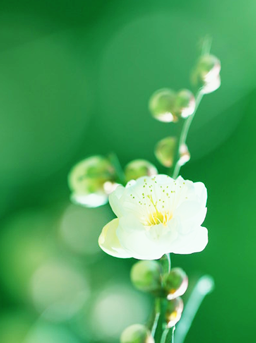

バラ科サクラ属の落葉高木、またはその果実のこと。花芽はモモと異なり、一節につき1個となるため、モモに比べ、開花時の華やかな印象は薄い
UME
Fallen leaves tall tree of prunus or the fruit. To be different from a peach in a flower bud and become 1 about a phrase, the showy impression when blooming, is thin compared with a peach.

umegreen_PT
21/27